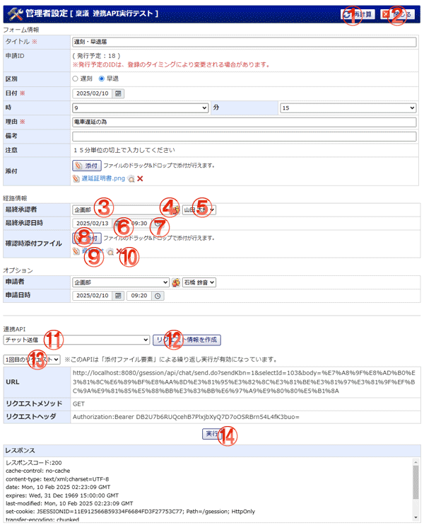

決裁後アクションの実行テストを行います。

機能説明
再計算ボタンフォーム情報を再計算します。 |
閉じるボタンウィンドウを閉じます。 |
グループ選択コンボグループを選択します。 |
グループ選択アイコングループ選択ウィンドウを表示します。 |
ユーザ選択コンボユーザを選択します。 |
カレンダーボタン日付選択カレンダーを表示します。 |
時計ボタン時間選択用の時計を表示します。 |
添付ボタンフォルダウィンドウが開きます。フォルダウィンドウでファイルを選択すると、添付ボタンの下にファイル名が表示されます。 |
ファイル名ファイルをダウンロードします。 |
削除アイコンファイルを削除します。 |
連携API選択コンボ実行テストを行う連携APIを選択します。 |
リクエスト情報を作成ボタンフォーム情報、経路情報、オプションに入力された内容と連携API情報から作成されたリクエスト情報を表示します。 |
繰り返し実行対象選択コンボ繰り返し実行の何回目を実行テストするかを選択します。 |
実行ボタンテストを実行します。実行結果がレスポンス欄に表示されます。 |
表示・入力項目説明
フォーム情報
共有テンプレートに登録されているフォーム情報にテスト用の値を入力します。
経路情報
経路情報にテスト用の値を入力します。
オプション
申請者、申請日時にテスト用の値を入力します。
連携API
テストする連携APIを選択し、実行します。